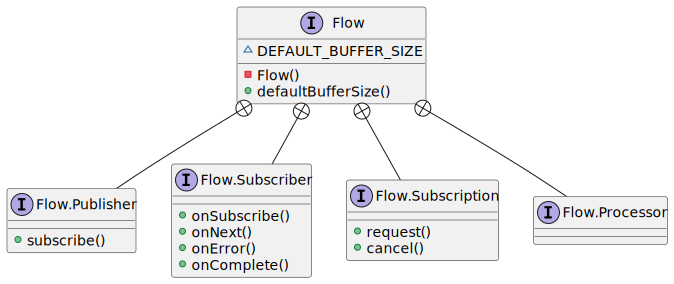

/*
* DO NOT ALTER OR REMOVE COPYRIGHT NOTICES OR THIS FILE HEADER.
*
* This code is free software; you can redistribute it and/or modify it
* under the terms of the GNU General Public License version 2 only, as
* published by the Free Software Foundation. Oracle designates this
* particular file as subject to the "Classpath" exception as provided
* by Oracle in the LICENSE file that accompanied this code.
*
* This code is distributed in the hope that it will be useful, but WITHOUT
* ANY WARRANTY; without even the implied warranty of MERCHANTABILITY or
* FITNESS FOR A PARTICULAR PURPOSE. See the GNU General Public License
* version 2 for more details (a copy is included in the LICENSE file that
* accompanied this code).
*
* You should have received a copy of the GNU General Public License version
* 2 along with this work; if not, write to the Free Software Foundation,
* Inc., 51 Franklin St, Fifth Floor, Boston, MA 02110-1301 USA.
*
* Please contact Oracle, 500 Oracle Parkway, Redwood Shores, CA 94065 USA
* or visit www.oracle.com if you need additional information or have any
* questions.
*/
/*
* This file is available under and governed by the GNU General Public
* License version 2 only, as published by the Free Software Foundation.
* However, the following notice accompanied the original version of this
* file:
*
* Written by Doug Lea with assistance from members of JCP JSR-166
* Expert Group and released to the public domain, as explained at
* http://creativecommons.org/publicdomain/zero/1.0/
*/
package java.util.concurrent;
/**
* Interrelated interfaces and static methods for establishing
* flow-controlled components in which {@link Publisher Publishers}
* produce items consumed by one or more {@link Subscriber
* Subscribers}, each managed by a {@link Subscription
* Subscription}.
*
* 用于建立流控制组件的接口和静态方法，其中 {@link Publisher Publisher}
* 发布由一个或多个 {@link Subscriber Subscribers} 消费的项目，
* 每一个 {@link Subscriber Subscribers} 都由一个 {@link Subscription Subscription} 管理。
*
* <p>These interfaces correspond to the <a
* href="http://www.reactive-streams.org/"> reactive-streams</a>
* specification. They apply in both concurrent and distributed
* asynchronous settings: All (seven) methods are defined in {@code
* void} "one-way" message style. Communication relies on a simple form
* of flow control (method {@link Subscription#request}) that can be
* used to avoid resource management problems that may otherwise occur
* in "push" based systems.
*
* <p>这些接口对应<a href="http://www.reactive-streams.org/"> reactive-streams</a>
* 规范。其适用于并发和分布式异步环境：所有（7个）方法均定义为无返回值的“单向”消息风格。
* 通信依赖于一种简式流量控制（方法{@link Subscription#request}）
* 这可以用来避免在基于“推”的系统中可能出现的资源管理问题。
*
* <p><b>Examples.</b> A {@link Publisher} usually defines its own
* {@link Subscription} implementation; constructing one in method
* {@code subscribe} and issuing it to the calling {@link
* Subscriber}. It publishes items to the subscriber asynchronously,
* normally using an {@link Executor}. For example, here is a very
* simple publisher that only issues (when requested) a single {@code
* TRUE} item to a single subscriber. Because the subscriber receives
* only a single item, this class does not use buffering and ordering
* control required in most implementations (for example {@link
* SubmissionPublisher}).
*
* <p><b>例如。</b> 一个 {@link Publisher} 通常定义自己的 {@link Subscription} 实现;
* 在{@code subscribe}方法中构造{@link Subscription}并将其发送给{@link Subscriber}。
* 其通常使用{@link Executor}异步的向订阅者发布项目。
* 例如，下面是一个非常简单二发布者，它只向单个订阅者发布（当订阅者请求时）一个{@code TRUE}元素。
* 因为订阅者只接受一个项目，这个类不使用大多数实现中所需要的缓冲和排序控制（例如{@link SubmissionPublisher}）
* <pre> {@code
*
* class OneShotPublisher implements Publisher<Boolean> {
* private final ExecutorService executor = ForkJoinPool.commonPool(); // daemon-based
* private boolean subscribed; // true after first subscribe
* public synchronized void subscribe(Subscriber<? super Boolean> subscriber) {
* if (subscribed)
* subscriber.onError(new IllegalStateException()); // only one allowed
* else {
* subscribed = true;
* subscriber.onSubscribe(new OneShotSubscription(subscriber, executor));
* }
* }
* static class OneShotSubscription implements Subscription {
* private final Subscriber<? super Boolean> subscriber;
* private final ExecutorService executor;
* private Future<?> future; // to allow cancellation
* private boolean completed;
* OneShotSubscription(Subscriber<? super Boolean> subscriber,
* ExecutorService executor) {
* this.subscriber = subscriber;
* this.executor = executor;
* }
* public synchronized void request(long n) {
* if (!completed) {
* completed = true;
* if (n <= 0) {
* IllegalArgumentException ex = new IllegalArgumentException();
* executor.execute(() -> subscriber.onError(ex));
* } else {
* future = executor.submit(() -> {
* subscriber.onNext(Boolean.TRUE);
* subscriber.onComplete();
* });
* }
* }
* }
* public synchronized void cancel() {
* completed = true;
* if (future != null) future.cancel(false);
* }
* }
* }}</pre>
*
* <p>A {@link Subscriber} arranges that items be requested and
* processed. Items (invocations of {@link Subscriber#onNext}) are
* not issued unless requested, but multiple items may be requested.
* Many Subscriber implementations can arrange this in the style of
* the following example, where a buffer size of 1 single-steps, and
* larger sizes usually allow for more efficient overlapped processing
* with less communication; for example with a value of 64, this keeps
* total outstanding requests between 32 and 64.
* Because Subscriber method invocations for a given {@link
* Subscription} are strictly ordered, there is no need for these
* methods to use locks or volatiles unless a Subscriber maintains
* multiple Subscriptions (in which case it is better to instead
* define multiple Subscribers, each with its own Subscription).
*
* <p>{@link Subscriber}会负责对元素的请求和处理
* 除非订阅者请求元素元素否则不会发出项目（调用{@link Subscriber#onNext}）
* ,但可以一次请求多个元素。许多订阅者实现会按照以下示例的风格进行协商，
* 其中缓冲区大小为1个single-step,并且更大的大小通常允许更有效的overlapped处理，
* 和更少的通信, 比如，值为64,这会将未完成的请求总数保持在 32 到 64 之间。
* 因为给定 Flow.Subscription 的订阅者方法调用是严格排序的，
* 除非订阅者维护多个订阅，否则这些方法不需要使用锁或易失性
* （在这种情况下，最好定义多个订阅者，每个订阅者都有自己的订阅）。
*
* <pre> {@code
* class SampleSubscriber<T> implements Subscriber<T> {
* final Consumer<? super T> consumer;
* Subscription subscription;
* final long bufferSize;
* long count;
* SampleSubscriber(long bufferSize, Consumer<? super T> consumer) {
* this.bufferSize = bufferSize;
* this.consumer = consumer;
* }
* public void onSubscribe(Subscription subscription) {
* long initialRequestSize = bufferSize;
* count = bufferSize - bufferSize / 2; // re-request when half consumed
* (this.subscription = subscription).request(initialRequestSize);
* }
* public void onNext(T item) {
* if (--count <= 0)
* subscription.request(count = bufferSize - bufferSize / 2);
* consumer.accept(item);
* }
* public void onError(Throwable ex) { ex.printStackTrace(); }
* public void onComplete() {}
* }}</pre>
*
* <p>The default value of {@link #defaultBufferSize} may provide a
* useful starting point for choosing request sizes and capacities in
* Flow components based on expected rates, resources, and usages.
* Or, when flow control is never needed, a subscriber may initially
* request an effectively unbounded number of items, as in:
*
* <pre> {@code
* class UnboundedSubscriber<T> implements Subscriber<T> {
* public void onSubscribe(Subscription subscription) {
* subscription.request(Long.MAX_VALUE); // effectively unbounded
* }
* public void onNext(T item) { use(item); }
* public void onError(Throwable ex) { ex.printStackTrace(); }
* public void onComplete() {}
* void use(T item) { ... }
* }}</pre>
*
* @author Doug Lea
* @since 9
*/
public final class Flow {
private Flow() {} // uninstantiable
/**
* A producer of items (and related control messages) received by
* Subscribers. Each current {@link Subscriber} receives the same
* items (via method {@code onNext}) in the same order, unless
* drops or errors are encountered. If a Publisher encounters an
* error that does not allow items to be issued to a Subscriber,
* that Subscriber receives {@code onError}, and then receives no
* further messages. Otherwise, when it is known that no further
* messages will be issued to it, a subscriber receives {@code
* onComplete}. Publishers ensure that Subscriber method
* invocations for each subscription are strictly ordered in <a
* href="package-summary.html#MemoryVisibility"><i>happens-before</i></a>
* order.
* 订阅者接收的项目（和相关控制信息）的生产者。当前的每个 {@link Subscriber}
* 都以相同的顺序接收相同的项（通过{@code onNext}方法），除非遇到丢弃或错误。
* 如果一个生产者发生错误那么则不允许任何项被发送到订阅者，订阅者被调用
* {@code onError}方法，且从此不会再收到消息。否则，当订阅者的{@code onComplete}
* 方法被调用时，其知道不会再有更多消息发送给它了。
* 发布者确保每个订阅的订阅者方法严格按照
* <a href="package-summary.html#MemoryVisibility"><i>happens-before>顺序进行。
*
* <p>Publishers may vary in policy about whether drops (failures
* to issue an item because of resource limitations) are treated
* as unrecoverable errors. Publishers may also vary about
* whether Subscribers receive items that were produced or
* available before they subscribed.
* <p>
* <p>发布者可能会在关于丢弃（由于资源限制而未能发布项目）是否视为不可恢复错误
* 的政策上有所不同。
* 订阅者也会在订阅者是否可以收到订阅前已生产或可用的项而不同。
* <p>
*
* @param <T> 发布项的类型
*/
@FunctionalInterface
public static interface Publisher<T> {
/**
* Adds the given Subscriber if possible. If already
* subscribed, or the attempt to subscribe fails due to policy
* violations or errors, the Subscriber's {@code onError}
* method is invoked with an {@link IllegalStateException}.
* Otherwise, the Subscriber's {@code onSubscribe} method is
* invoked with a new {@link Subscription}. Subscribers may
* enable receiving items by invoking the {@code request}
* method of this Subscription, and may unsubscribe by
* invoking its {@code cancel} method.
* 如果可能添加给定的订阅者。如果已经订阅，或订阅尝试因违反
* 政策或错误而失败，则使用 {@link IllegalStateException}
* 调用订阅者的 {@code onError} 方法。
* 否则，则将 {@link Subscription} 作为参数调用订阅者的
* {@code onSubscribe} 方法。订阅者可以通过调用此订阅的
* {@code request} 方法启用接收项目，也可以通过调用其 {@code cancel}
* 方法取消订阅。
*
* @param subscriber 订阅者
* @throws NullPointerException 如果订阅者为 null
*/
public void subscribe(Subscriber<? super T> subscriber);
}
/**
* A receiver of messages. The methods in this interface are
* invoked in strict sequential order for each {@link
* Subscription}.
*
* @param <T> the subscribed item type
*/
public static interface Subscriber<T> {
/**
* Method invoked prior to invoking any other Subscriber
* methods for the given Subscription. If this method throws
* an exception, resulting behavior is not guaranteed, but may
* cause the Subscription not to be established or to be cancelled.
*
* <p>Typically, implementations of this method invoke {@code
* subscription.request} to enable receiving items.
*
* @param subscription a new subscription
*/
public void onSubscribe(Subscription subscription);
/**
* Method invoked with a Subscription's next item. If this
* method throws an exception, resulting behavior is not
* guaranteed, but may cause the Subscription to be cancelled.
*
* @param item the item
*/
public void onNext(T item);
/**
* Method invoked upon an unrecoverable error encountered by a
* Publisher or Subscription, after which no other Subscriber
* methods are invoked by the Subscription. If this method
* itself throws an exception, resulting behavior is
* undefined.
*
* @param throwable the exception
*/
public void onError(Throwable throwable);
/**
* Method invoked when it is known that no additional
* Subscriber method invocations will occur for a Subscription
* that is not already terminated by error, after which no
* other Subscriber methods are invoked by the Subscription.
* If this method throws an exception, resulting behavior is
* undefined.
*/
public void onComplete();
}
/**
* Message control linking a {@link Publisher} and {@link
* Subscriber}. Subscribers receive items only when requested,
* and may cancel at any time. The methods in this interface are
* intended to be invoked only by their Subscribers; usages in
* other contexts have undefined effects.
*/
public static interface Subscription {
/**
* Adds the given number {@code n} of items to the current
* unfulfilled demand for this subscription. If {@code n} is
* less than or equal to zero, the Subscriber will receive an
* {@code onError} signal with an {@link
* IllegalArgumentException} argument. Otherwise, the
* Subscriber will receive up to {@code n} additional {@code
* onNext} invocations (or fewer if terminated).
*
* @param n the increment of demand; a value of {@code
* Long.MAX_VALUE} may be considered as effectively unbounded
*/
public void request(long n);
/**
* Causes the Subscriber to (eventually) stop receiving
* messages. Implementation is best-effort -- additional
* messages may be received after invoking this method.
* A cancelled subscription need not ever receive an
* {@code onComplete} or {@code onError} signal.
*/
public void cancel();
}
/**
* A component that acts as both a Subscriber and Publisher.
*
* @param <T> the subscribed item type
* @param <R> the published item type
*/
public static interface Processor<T,R> extends Subscriber<T>, Publisher<R> {
}
static final int DEFAULT_BUFFER_SIZE = 256;
/**
* Returns a default value for Publisher or Subscriber buffering,
* that may be used in the absence of other constraints.
*
* @implNote
* The current value returned is 256.
*
* @return the buffer size value
*/
public static int defaultBufferSize() {
return DEFAULT_BUFFER_SIZE;
}
}